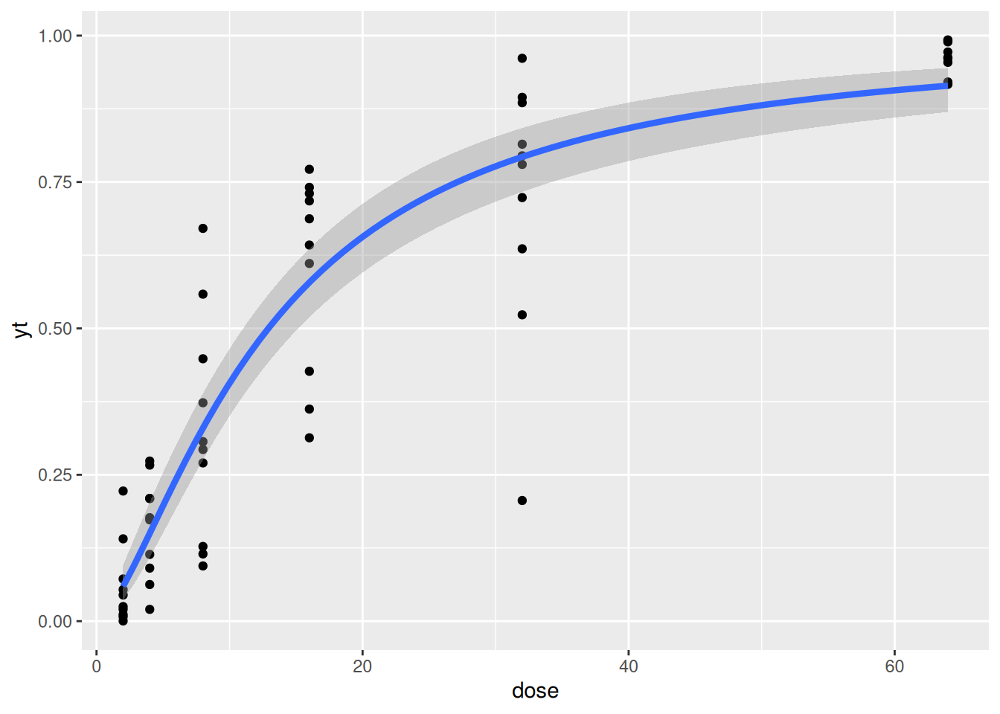
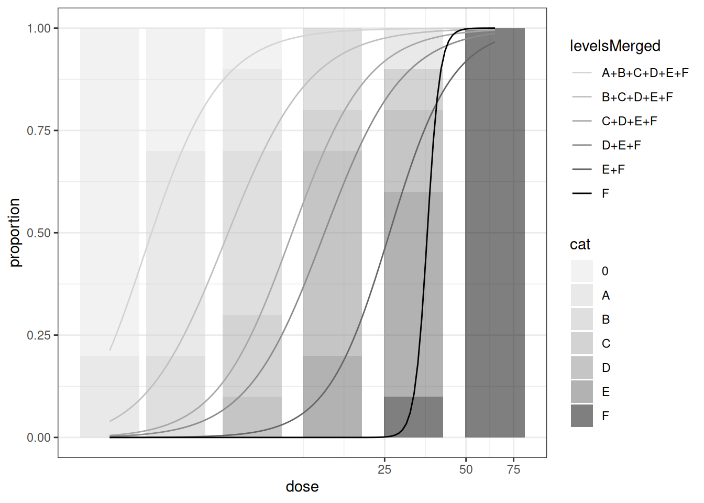
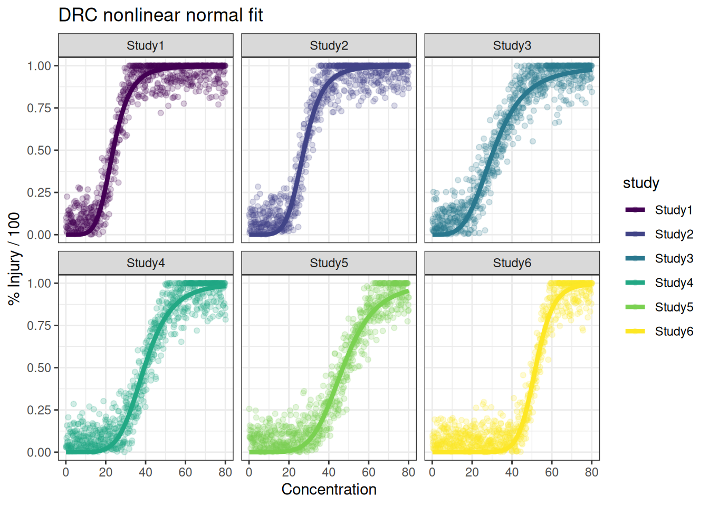

Example Ordinal Data Analysis
Zhenglei Gao
Source:vignettes/articles/Ordinal-Data.Rmd
Ordinal-Data.RmdBackground
There is no routine procedures in regulatory frameworks for ordinal data analysis yet. For histopathological data, it is recommended to use RSCABS (Rao-Scott Adjusted Cochran-Armitage Trend Test by Slices) to derive NOEALs. An alternative is MQJT(Multiquantal Jonckheere–Terpstra), which is mentioned in OECD TG 231 for AMA life stage analysis.
Plant visual injury data has been evaluated qualitatively and it is possible to analyze them quantitatively.
For well-behaving data (full clear dose-response), most approaches
will produce very similar results as long as the target endpoint (the
test rate or concentration where the average injury is reaching 50% or
is medium injury category) is the same. In this article, we will explain
how several regression modelling can be applied, focusing on nonlinear
regression with sigmoid shaped curve, logistic regression with
quasibinomial likelihood, and the conventional proportional odds
logistic regression. Other approaches with a different endpoint type are
demonstrated as well, including BMD for ordinal data using
bmdordinal, RSCABS, etc.
All approaches have its own limitations and need to be treated with caution. For example, for nonlinear model with a normal error assumption behind, issues could occur with inhomogeneous variance, uncertain considerations is critical when the data is over-spread across many categories close to the estimated ER50. I think whichever method to choose, careful evaluation the assumptions of the model and check the model data agreement are always necessary.
Ordinal Data in General
From a statistical point view, ordinal data is a type of categorical data where the order matters, but the exact differences or distances between the categories are not defined. For example, survey responses like “satisfied,” “neutral,” and “dissatisfied”, ranking like 1st, 2nd, 3rd, levels of education like high school, bachelor, master. Market research, psychology, health studies, and social sciences often use ordinal data.
Since ordinal data doesn’t assume equal intervals, non-parametric methods are often used. Medians rather than means are often the basis of comparisons. Chi-Square test can be used to determine if there is a significant association between two categorical variables. Spearman’s Rank Correlation and Kendall’s tau are correlation measures that can assess the strength and direction of association between two ranked variables.
Ordinal Regression is a somewhat complex method that can predict outcomes based on ordinal data. It helps understand how different factors influence rankings and the transition between the ordered categories.
- Proportional Odds Model: Coefficient (slopes) remains constant across all categories.
- Continuation Ratio Model: Model cumulative odds ratios.
- Adjacent Categories Model: useful when neighboring categories influence each other.
Due to the limited information and potentially unequal intervals, it requires a clear understanding of its subtleties and complexities, and careful attentions when implementing regression modelling.
In the ecotoxicology area, histopathology assessment and visual injury data are ranked categorical data. We focus on the plant visual injury data (PVI).
Type of Endpoints
Depending on how the response variables and the independent variables are treated, different types of endpoints can be derived.
If the independent variable is treated as a factor or categorical, then the No Observed Effect Concentration (NOEC) regarding a specific injury level can be derived by treating the response as ordinal. Alternatively, a NOEC can be calculated by treating the response as continuous, using either direct hypothesis testing or post hoc testing after regression modeling. Conversely, if the independent variable is treated as continuous, endpoints such as ECx or Benchmark Dose (BMDx) regarding a specific injury level (with the response treated as ordinal) or regarding the average injury level (with the response treated as continuous) can be calculated.
Data Characteristics
The systematic error or bias that can occur during the assessment of Plant Visual Injury (PVI) data is beyond the scope of this discussion. Here, we focus solely on the analysis approaches.
Limitations
Each method makes its own assumptions and has inherent limitations. For example, the Rao-Scott Cochran-Armitage by slice (RSCABS) method cannot handle too many categories effectively. Ordinal regression can be complex when determining an Effective Rate (ER50) or Effective Concentration (EC50). Additionally, treating the response as continuous (from 0 to 1 or from 0 to 100%) may lead to issues with heterogeneous variance.
Regression Approaches with Continuous x
The most natural approach would be using conventional ordinal regression modelling to derive an ER50. However, this approach is not routinely applied in regulatory ecotoxicology, the interpretation including the assumption behind is a bit more complex. To derive an ER50, specific function and optimization need to be defined for this purpose. Confidence intervals need to be derived from bootstrap method and take longer time in calculation. We only use this approach in comparison with the more commonly or easily applied modelling approaches.
When transforming the ordinal variable into percentages or proportions, it is also possible to model them as continuous data or using logitic regression with quasibinomial assumptions. The two approaches produce similar results when the data is behaving truly like a dose-response with over-dispersed binomial distributions.
The data is artificial and with full dose-response relationship observed with true ER50=12.18.
dattab_new <- pvi_example ## use the example PVI data in the drcHelper package
## Note that yy2 is transformed by increment of 90/5 = 16.
dattab_new$y0 <- factor(dattab_new$y0,ordered = T)
ftable(xtabs(~ y0 + dose, data = dattab_new)) ##%>% gt::gt() ## as.data.frame(.) %>% knitr::kable(.,digits = 3)
#> dose 2 4 8 16 32 64
#> y0
#> 0 8 3 1 0 0 0
#> A 2 5 2 0 1 0
#> B 0 2 4 2 0 0
#> C 0 0 2 1 1 0
#> D 0 0 1 5 2 0
#> E 0 0 0 2 5 0
#> F 0 0 0 0 1 10
dattab_new %>% group_by(y0) %>% summarise(n=n(),meany=mean(yt),meanyy2=mean(yy2)) %>% knitr::kable(.,digits = 3)| y0 | n | meany | meanyy2 |
|---|---|---|---|
| 0 | 12 | 0.042 | 0.05 |
| A | 10 | 0.169 | 0.18 |
| B | 8 | 0.307 | 0.34 |
| C | 4 | 0.489 | 0.50 |
| D | 8 | 0.677 | 0.66 |
| E | 7 | 0.812 | 0.82 |
| F | 11 | 0.958 | 0.95 |
dattab_new %>% group_by(dose) %>% summarise(n=n(),meany=mean(yt),meanyy=mean(yy)) %>% knitr::kable(.,digits = 3)| dose | n | meany | meanyy |
|---|---|---|---|
| 2 | 10 | 0.060 | 0.02 |
| 4 | 10 | 0.160 | 0.11 |
| 8 | 10 | 0.326 | 0.31 |
| 16 | 10 | 0.600 | 0.64 |
| 32 | 10 | 0.722 | 0.75 |
| 64 | 10 | 0.958 | 1.00 |
ggplot(dattab_new,aes(x = dose, y=yt))+geom_point() + geom_smooth(method="glm", method.args=list(family="quasibinomial"), formula="y ~ log(x)",
se =TRUE, linewidth=1.5)
library(drc)
mod_drc <- drm(yy2 ~ dose, data = dattab_new, fct = LL.2())
summary(mod_drc)
#>
#> Model fitted: Log-logistic (ED50 as parameter) with lower limit at 0 and upper limit at 1 (2 parms)
#>
#> Parameter estimates:
#>
#> Estimate Std. Error t-value p-value
#> b:(Intercept) -1.33865 0.13595 -9.8465 5.487e-14 ***
#> e:(Intercept) 12.74391 1.03919 12.2633 < 2.2e-16 ***
#> ---
#> Signif. codes: 0 '***' 0.001 '**' 0.01 '*' 0.05 '.' 0.1 ' ' 1
#>
#> Residual standard error:
#>
#> 0.1446638 (58 degrees of freedom)
ED(mod_drc, c(50), interval = "delta")
#>
#> Estimated effective doses
#>
#> Estimate Std. Error Lower Upper
#> e:1:50 12.7439 1.0392 10.6637 14.8241
suppressWarnings({
plot(mod_drc, type = "all",main="log-logistic + normal, ER50= 12.74", broken = TRUE)
plot(mod_drc, broken = TRUE, type="confidence", add=TRUE)
})Putting quasi-binomial and normal fit together
library(drc)
predictCIglm <- function(mod,dat,newdata=NULL){
if(is.null(newdata)){
preddata <- with(dat, data.frame(x = seq(min(x), max(x), length = 100)))
}else predata <- newdata
preds <- predict(mod, newdata = preddata, type = "link", se.fit = TRUE)
critval <- 1.96 ## approx 95% CI qnorm(0.975)
upr <- preds$fit + (critval * preds$se.fit)
lwr <- preds$fit - (critval * preds$se.fit)
fit <- preds$fit
fit2 <- mod$family$linkinv(fit)
upr2 <- mod$family$linkinv(upr)
lwr2 <- mod$family$linkinv(lwr)
preddata$Prediction <- fit2
preddata$Lower <- lwr2
preddata$Upper <- upr2
return(preddata)
}
preddrc <- function(mod,dat,newdata=NULL){
if(is.null(newdata)){
preddata <- with(dat, data.frame(x = seq(min(x), max(x), length = 100)))
}else predata <- newdata
preds <- predict(mod,newdata=preddata,interval="confidence")
preddata <- cbind(preddata,preds)
return(preddata)
}
modelall <- function(dat,addbeta = FALSE){
mod1 <- glm(y~log(x),data=dat,family = "quasibinomial")
mod2 <- drm(y~x,fct=LL.2(),data=dat)
## mod3 <- MASS::glmmPQL(y ~ log(x),random=~1|x,family="quasibinomial",data=dat)
## Estimation the same as quasibinomial without random effects, uncertainty estimation wider.
## mod3 <- lme4::glmer(y ~ log(x)+ (1|x),family="binomial",data=dat) ## dose not work without sample size.
# mod4 <- betareg::betareg(y ~ log(x),link="logit",data=dat)
# y3<- predict(mod3,newdata=data.frame(x=dat$x),type="response")
y1 <- predictCIglm(mod1,dat=dat)
y1$model <- "quasibinomial"
y2 <- preddrc(mod2,dat = dat)
y2$model <- "drc LL.2"
preddata <- rbind(y1,y2)
ec1 <- getEC50(mod1)
ec2 <- getEC50(mod2)
ec50 <- data.frame(rbind(ec1,ec2),model=c("quasibinomial","drc LL.2"))
if(addbeta) {
mod3 <- gam(y ~ log(x), family=betar(link="logit"), data=dat)
y3 <- predictCIglm(mod3,dat=dat)
y3$model <- "beta"
preddata <- rbind(preddata,y3)
ec3 <- getEC50(mod3)
ec50 <- rbind(ec50,data.frame(ec3,model=c("beta")))
}
#ec4 <- uniroot(function(x) predict(mod4, newdata = data.frame(x=x)) - 0.5,lower = 1, upper = 80)$root
## 19.55968 beta regression does not perform better than binomial or quasi-binomial regression!
return(list(ec50=ec50,predata=preddata))
}
modelallbeta <- function(dat){
modelall(dat,addbeta=TRUE)
}
dattab_new <- dattab_new %>% mutate(y=yy,x=dose)%>%as.data.frame(.)
suppressWarnings({modres <- modelall(dattab_new)})
#>
#> Estimated effective doses
#>
#> Estimate Std. Error Lower Upper
#> e:1:50 12.7097 1.0856 10.5367 14.8826
predres <- modres[[2]]
knitr::kable(rbind(modres[[1]]%>%mutate(TrueEC50 = 12.18),data.frame(EC50=12.15856,lower=10.16505,upper=15.09790,se=NA,model="ordinal regression", TrueEC50 =12.18)),digits=3)| EC50 | lower | upper | se | model | TrueEC50 |
|---|---|---|---|---|---|
| 12.789 | 10.744 | 15.223 | 1.144 | quasibinomial | 12.18 |
| 12.710 | 10.537 | 14.883 | 1.086 | drc LL.2 | 12.18 |
| 12.159 | 10.165 | 15.098 | NA | ordinal regression | 12.18 |
p_drc_qb <- ggplot(dattab_new, aes(x=dose, y=yt)) +geom_point(alpha=0.1)+ geom_point(aes(x=dose, y=yy),col="green")+
#scale_color_viridis_d()+scale_fill_viridis_d()+
# scale_color_brewer(palette = "Reds") +
# #geom_smooth(method="loess", se = FALSE, size=1.5) +
geom_ribbon(data=predres,aes(x=x,y=Prediction,ymin=Lower,ymax=Upper,col=model,fill=model),alpha=0.2)+geom_line(data=predres,aes(x=x,y=Prediction,col=model))+
xlab("Concentration") +
ylab("% Injury / 100")
p_drc_qbOn the GoF
Normally we could test lack of fit for continuous data by comparing the model fit with ANOVA model, which should achieve the least square estimation. Changjian proposed to use the prediction intervals from the models to estimate the frequency table that would usually be a product of conventional ordinal regression, followed by a chi-square test.
The common goodness of fit tests and measures for logistic regression include deviance or likelihood ratio test, the Hosmer-Lemeshow Test, the pseudo R-squared measures, residual analysis, and classification/frequency tables.
Additional Thoughts
Thinking about (quasi)-binomial type modelling and data-generation process, it is possible to assume when you see level B injury, you had many independent binary yes/no outcomes (conditional on the observed covariate values for each replicate or experiment unit) for each injury level or for an arbitrary number of categories, the proportion of yes answer is then the average injury. The probabilities of each binary outcome are the same, which may mismatch the observed data rather badly.
Beta regression can be used to model proportions too, however, 0 and 1’s need to be specifically handled.
Using Conventional Ordinal Regression Approaches
Ordinal regression approaches works well in terms of prediction but would need a specific function to calculate ER50. \(\sum p_i Y_{ij}\) would be the average injury level. Here we achieved by the steps below:
- We fit an ordinal regression model using polr with your ordinal response data.
- Define the expected Response Function: The key to solving this problem is calculating the expected response at any dose:
- We calculate the probability of being in each category at a given dose
- We multiply these probabilities by the corresponding injury percentages (0%, 10%, 30%, 50%, 70%, 90%, 100%)
- The sum gives us the expected injury percentage at that dose
- Finding EC50: We search through a range of doses to find where the expected injury percentage is closest to 50%. Alternatively, we could define an objective function and use optimization to find the dose, which could be more precise than the grid search approach.
- Bootstrap Confidence Intervals:
- We resample the data with replacement 1000 times
- For each bootstrap sample, we calculate the EC50
- The 2.5th and 97.5th percentiles of these bootstrap EC50 values form our 95% confidence interval
This approach provides a robust estimate of the EC50 with confidence intervals that account for the uncertainty in your data and model. The bootstrap method is particularly valuable here because it doesn’t require assumptions about the distribution of the EC50 estimator.
The proportional odds model can be interpreted in terms of probabilities of transitions and also in terms of covariate-specific cumulative probabilities. The latter is a bit easier to understand. Ordinal regression can be conducted using MASS::polr function or the function provided in GLMcat, which is an R package that encompasses lots of models specified in a similar way: (ratio, cdf, design: parallel or complete).
## fit ordered logit model and store results 'm'
dattab_new $y0 <- factor(dattab_new$y0, levels = c("0","A","B","C","D","E","F"),ordered = TRUE)
m <- MASS::polr(y0 ~ log(dose), data = dattab_new, Hess=TRUE)
summary(m)
#> Call:
#> MASS::polr(formula = y0 ~ log(dose), data = dattab_new, Hess = TRUE)
#>
#> Coefficients:
#> Value Std. Error t value
#> log(dose) 3.465 0.4876 7.106
#>
#> Intercepts:
#> Value Std. Error t value
#> 0|A 4.0061 0.8091 4.9513
#> A|B 6.3415 1.0283 6.1669
#> B|C 8.1921 1.2395 6.6092
#> C|D 9.1287 1.3489 6.7677
#> D|E 10.9709 1.5691 6.9917
#> E|F 12.9482 1.8234 7.1011
#>
#> Residual Deviance: 128.7906
#> AIC: 142.7906
# Extract the coefficients and thresholds
coefficients <- coef(m)
thresholds <- m$zeta
# Define a function to calculate the expected response category at any given dose
expected_response <- function(log_dose, coefficients, thresholds) {
# Calculate probabilities for each category
probabilities <- sapply(1:length(thresholds), function(i) {
plogis(thresholds[i] - coefficients * log_dose)
})
# Convert to category probabilities
probabilities <- c(probabilities, 1) - c(0, probabilities)
# Define the injury percentage for each category
categories <- c(0, 10, 30, 50, 70, 90, 100)
# Calculate expected value (weighted average)
expected_value <- sum(probabilities * categories)
return(expected_value)
}
# Find the dose where the expected response is closest to 50%
log_doses <- seq(log(0.1), log(100), length.out = 1000)
responses <- sapply(log_doses, expected_response,
coefficients = coefficients["log(dose)"],
thresholds = thresholds)
closest_index <- which.min(abs(responses - 50))
dose_ec50 <- exp(log_doses[closest_index])
# Print the EC50 value
print(dose_ec50)
#> [1] 12.13624or we could find the EC50 by an optimization
# Define the objective function to minimize (distance from 50%)
objective_function <- function(log_dose) {
abs(expected_response(log_dose, coefficients["log(dose)"], thresholds) - 50)
}
# Use optimization to find the EC50
result <- optimize(objective_function, interval = c(log(0.1), log(100)))
dose_ec50 <- exp(result$minimum)
# Print the EC50 value and the corresponding expected response
print(paste("EC50:", round(dose_ec50, 4)))
#> [1] "EC50: 12.1586"
print(paste("Expected response at EC50:",
round(expected_response(result$minimum, coefficients["log(dose)"], thresholds), 4)))
#> [1] "Expected response at EC50: 49.9986"Note that when implementing the bootstrap approach, some bootstrap samples are causing separation problems in the ordinal regression model, which is common when resampling from smaller datasets. Therefore, a robust solution here is given to gracefully handle this issue.
# Define the function to calculate EC50 for a bootstrap sample with error handling
calculate_ec50 <- function(data) {
# Try to fit the model, return NA if it fails
m_boot <- try(polr(y0 ~ log(dose), data = data, Hess = TRUE), silent = TRUE)
if (inherits(m_boot, "try-error")) return(NA)
coefficients <- coef(m_boot)
thresholds <- m_boot$zeta
# Define objective function to minimize
objective_function <- function(log_dose) {
abs(expected_response(log_dose, coefficients["log(dose)"], thresholds) - 50)
}
# Try to optimize, return NA if it fails
result <- try(optimize(objective_function, interval = c(log(0.1), log(100))), silent = TRUE)
if (inherits(result, "try-error")) return(NA)
dose_ec50 <- exp(result$minimum)
return(dose_ec50)
}
# Bootstrap resampling with error handling
set.seed(123)
n_bootstrap <- 1000
bootstrap_ec50 <- replicate(n_bootstrap, {
# Sample with replacement
sample_indices <- sample(1:nrow(dattab_new), replace = TRUE)
bootstrap_sample <- dattab_new[sample_indices, ]
# Calculate EC50 for this sample
calculate_ec50(bootstrap_sample)
})
# Remove NA values from bootstrap results
bootstrap_ec50 <- na.omit(bootstrap_ec50)
valid_samples <- length(bootstrap_ec50)
# Calculate point estimate using original data rather than as the mean of bootstrap estimates, which is more statistically sound.
ec50_point <- calculate_ec50(dattab_new)
# Calculate confidence intervals
ec50_ci <- quantile(bootstrap_ec50, c(0.025, 0.975))
# Print the results
print(paste("EC50:", round(ec50_point, 4)))
#> [1] "EC50: 12.1586"
print(paste("95% Confidence Interval:", round(ec50_ci[1], 4), "-", round(ec50_ci[2], 4)))
#> [1] "95% Confidence Interval: 10.1651 - 15.0979"
## Reporting Valid Samples: how many bootstrap samples were valid, which helps assess the reliability of the confidence interval.
print(paste("Based on", valid_samples, "valid bootstrap samples out of", n_bootstrap))
#> [1] "Based on 957 valid bootstrap samples out of 1000"Additional understanding of the ordinal regression model
ctable <- coef(summary(m))
## At ER50, the cumulative probability probability of the response being in a higher category is close to 1.
plogis(ctable[,1] + ctable[,2]*log(12.18))
#> log(dose) 0|A A|B B|C C|D D|E E|F
#> 0.9908438 0.9975973 0.9998653 0.9999875 0.9999963 0.9999997 1.0000000
## calculate and store p values
p <- pnorm(abs(ctable[, "t value"]), lower.tail = FALSE) * 2
## combined table
(ctable <- cbind(ctable, "p value" = p))
#> Value Std. Error t value p value
#> log(dose) 3.465155 0.4876298 7.106117 1.193530e-12
#> 0|A 4.006148 0.8091031 4.951344 7.370254e-07
#> A|B 6.341529 1.0283150 6.166913 6.963590e-10
#> B|C 8.192141 1.2395138 6.609156 3.865169e-11
#> C|D 9.128696 1.3488680 6.767672 1.308710e-11
#> D|E 10.970866 1.5691374 6.991654 2.716642e-12
#> E|F 12.948174 1.8234117 7.101070 1.237950e-12
(ci <- confint(m)) ## profiled CI
#> 2.5 % 97.5 %
#> 2.582836 4.504378
exp(cbind(coef(m),t(ci)))
#> 2.5 % 97.5 %
#> log(dose) 31.98141 13.23462 90.41212
## OR and CI
exp(cbind(OR = coef(m), ci))
#> OR ci
#> 2.5 % 31.98141 13.23462
#> 97.5 % 31.98141 90.41212
newdat <- data.frame(dose = unique(dattab_new$dose)) %>% mutate(logdose = log(dose))
(phat <- predict(object = m, newdat, type="p"))
#> 0 A B C D E
#> 1 8.326166e-01 0.1483000019 0.016035611 0.001850927 0.00100702 0.0001635762
#> 2 3.105443e-01 0.5126011687 0.144195119 0.019598385 0.01096824 0.0018025754
#> 3 3.918687e-02 0.2573055374 0.431914336 0.144078094 0.10487831 0.0194406374
#> 4 3.342916e-04 0.0031093320 0.018073161 0.031603441 0.20832988 0.4574198047
#> 5 3.679470e-03 0.0330795765 0.158639125 0.187148646 0.41376767 0.1694853156
#> 6 3.027903e-05 0.0002825179 0.001674417 0.003066947 0.02600507 0.1569497884
#> F
#> 1 2.628958e-05
#> 2 2.902582e-04
#> 3 3.196213e-03
#> 4 2.811301e-01
#> 5 3.420020e-02
#> 6 8.119910e-01
phat %>% knitr::kable(.,digits = 3)| 0 | A | B | C | D | E | F |
|---|---|---|---|---|---|---|
| 0.833 | 0.148 | 0.016 | 0.002 | 0.001 | 0.000 | 0.000 |
| 0.311 | 0.513 | 0.144 | 0.020 | 0.011 | 0.002 | 0.000 |
| 0.039 | 0.257 | 0.432 | 0.144 | 0.105 | 0.019 | 0.003 |
| 0.000 | 0.003 | 0.018 | 0.032 | 0.208 | 0.457 | 0.281 |
| 0.004 | 0.033 | 0.159 | 0.187 | 0.414 | 0.169 | 0.034 |
| 0.000 | 0.000 | 0.002 | 0.003 | 0.026 | 0.157 | 0.812 |
library(GLMcat)
dattab_new <- dattab_new %>% mutate(logdose = log(dose))
mod_ref_log_c <- glmcat(formula = y0 ~ logdose, ratio = "reference", cdf = "logistic", data = as.data.frame(dattab_new),ref="0",parallel = F)
summary(mod_ref_log_c)
#> y0 ~ logdose
#> ratio cdf nobs niter logLik
#> Model info: reference logistic 60 15 -61.33542
#> Estimate Std. Error z value Pr(>|z|)
#> (Intercept) A -2.907 1.309 -2.221 0.026323 *
#> (Intercept) B -5.398 1.835 -2.942 0.003260 **
#> (Intercept) C -9.347 3.019 -3.096 0.001958 **
#> (Intercept) D -10.923 3.065 -3.564 0.000366 ***
#> (Intercept) E -17.421 4.838 -3.600 0.000318 ***
#> (Intercept) F -118.572 109742.356 -0.001 0.999138
#> logdose A 2.179 0.993 2.194 0.028225 *
#> logdose B 3.415 1.177 2.901 0.003725 **
#> logdose C 4.803 1.504 3.194 0.001404 **
#> logdose D 5.633 1.499 3.758 0.000172 ***
#> logdose E 7.692 1.895 4.058 4.94e-05 ***
#> logdose F 36.404 31664.951 0.001 0.999083
#> ---
#> Signif. codes: 0 '***' 0.001 '**' 0.01 '*' 0.05 '.' 0.1 ' ' 1
(phat <- predict(object = mod_ref_log_c, newdat, type="prob"))
#> A B C D E
#> [1,] 1.904456e-01 3.716346e-02 1.873707e-03 6.891895e-04 4.324730e-06
#> [2,] 4.075170e-01 1.873256e-01 2.472185e-02 1.616443e-02 4.225492e-04
#> [3,] 3.188563e-01 3.452649e-01 1.192710e-01 1.386298e-01 1.509628e-02
#> [4,] 5.226961e-03 3.140645e-02 7.433584e-02 2.730262e-01 5.159543e-01
#> [5,] 7.795418e-02 1.988396e-01 1.797976e-01 3.714905e-01 1.685225e-01
#> [6,] 2.602312e-12 3.683282e-11 2.281986e-10 1.489914e-09 1.172910e-08
#> F 0
#> [1,] 2.238527e-41 7.698238e-01
#> [2,] 9.621150e-31 3.638486e-01
#> [3,] 1.512050e-20 6.288173e-02
#> [4,] 1.000000e-01 5.029071e-05
#> [5,] 7.425066e-11 3.395654e-03
#> [6,] 1.000000e+00 5.662137e-15
phat %>% knitr::kable(.,digits = 3)| A | B | C | D | E | F | 0 |
|---|---|---|---|---|---|---|
| 0.190 | 0.037 | 0.002 | 0.001 | 0.000 | 0.0 | 0.770 |
| 0.408 | 0.187 | 0.025 | 0.016 | 0.000 | 0.0 | 0.364 |
| 0.319 | 0.345 | 0.119 | 0.139 | 0.015 | 0.0 | 0.063 |
| 0.005 | 0.031 | 0.074 | 0.273 | 0.516 | 0.1 | 0.000 |
| 0.078 | 0.199 | 0.180 | 0.371 | 0.169 | 0.0 | 0.003 |
| 0.000 | 0.000 | 0.000 | 0.000 | 0.000 | 1.0 | 0.000 |
## (phat <- predict(object = mod_ref_log_c, newdat, type="linear.predictor"))
mod_cum_logis <- glmcat(formula = y0 ~ logdose, ratio = "cumulative", cdf = "logistic", data = as.data.frame(dattab_new),parallel = TRUE)
summary(mod_cum_logis)
#> y0 ~ logdose
#> ratio cdf nobs niter logLik
#> Model info: cumulative logistic 60 9 -64.3953
#> Estimate Std. Error z value Pr(>|z|)
#> (Intercept) 0 4.0061 0.8142 4.920 8.64e-07 ***
#> (Intercept) A 6.3415 1.0419 6.086 1.16e-09 ***
#> (Intercept) B 8.1920 1.2583 6.510 7.50e-11 ***
#> (Intercept) C 9.1286 1.3693 6.666 2.62e-11 ***
#> (Intercept) D 10.9707 1.6005 6.854 7.16e-12 ***
#> (Intercept) E 12.9479 1.8194 7.117 1.11e-12 ***
#> logdose -3.4651 0.4912 -7.054 1.74e-12 ***
#> ---
#> Signif. codes: 0 '***' 0.001 '**' 0.01 '*' 0.05 '.' 0.1 ' ' 1
(phat <- predict(object = mod_cum_logis, newdat, type="prob"))
#> 0 A B C D E
#> [1,] 8.326186e-01 0.1482975531 0.016035767 0.001851046 0.001007102 0.000163596
#> [2,] 3.105557e-01 0.5125923926 0.144191357 0.019598856 0.010968693 0.001802725
#> [3,] 3.919032e-02 0.2573138937 0.431903119 0.144076171 0.104878455 0.019441472
#> [4,] 3.343480e-04 0.0031097342 0.018074387 0.031605029 0.208331116 0.457408504
#> [5,] 3.679947e-03 0.0330824671 0.158642283 0.187148395 0.413758936 0.169485389
#> [6,] 3.028531e-05 0.0002825654 0.001674598 0.003067232 0.026006412 0.156948672
#> F
#> [1,] 2.629451e-05
#> [2,] 2.903015e-04
#> [3,] 3.196565e-03
#> [4,] 2.811369e-01
#> [5,] 3.420258e-02
#> [6,] 8.119902e-01
phat %>% knitr::kable(.,digits = 3)| 0 | A | B | C | D | E | F |
|---|---|---|---|---|---|---|
| 0.833 | 0.148 | 0.016 | 0.002 | 0.001 | 0.000 | 0.000 |
| 0.311 | 0.513 | 0.144 | 0.020 | 0.011 | 0.002 | 0.000 |
| 0.039 | 0.257 | 0.432 | 0.144 | 0.105 | 0.019 | 0.003 |
| 0.000 | 0.003 | 0.018 | 0.032 | 0.208 | 0.457 | 0.281 |
| 0.004 | 0.033 | 0.159 | 0.187 | 0.414 | 0.169 | 0.034 |
| 0.000 | 0.000 | 0.002 | 0.003 | 0.026 | 0.157 | 0.812 |
Other understanding of the dataset
In principle, ordinal regression is treating the ranked categorical
as several binomial for each category. Note that how the intercept of
0|A is -1.386294e+00.
fit0 <- MASS::polr(y0 ~ 1,
data = dattab_new,
Hess= T)
fit0
#> Call:
#> MASS::polr(formula = y0 ~ 1, data = dattab_new, Hess = T)
#>
#> No coefficients
#>
#> Intercepts:
#> 0|A A|B B|C C|D D|E
#> -1.386294e+00 -5.465462e-01 -1.793225e-06 2.682586e-01 8.472940e-01
#> E|F
#> 1.493920e+00
#>
#> Residual Deviance: 228.003
#> AIC: 240.003
## Note that
#source("https://github.com/rwnahhas/RMPH_Resources/raw/main/Functions_rmph.R")
ilogit <- function(x) exp(x)/(1+exp(x))
ilogit(fit0$zeta)
#> 0|A A|B B|C C|D D|E E|F
#> 0.2000001 0.3666661 0.4999996 0.5666653 0.6999992 0.8166659
sf <- function(y) {
c('Y>=1' = qlogis(mean(y >= 1)),
'Y>=2' = qlogis(mean(y >= 2)),
'Y>=3' = qlogis(mean(y >= 3)),
'Y>=4' = qlogis(mean(y >= 4)),
'Y>=5' = qlogis(mean(y >= 5)),
'Y>=6' = qlogis(mean(y >= 6))
)
}
library(Hmisc)
(s <- with(dattab_new,summary(as.numeric(y0) ~ (dose), fun=sf)))
#> as.numeric(y0) N= 60
#>
#> +-------+--+--+----+----------+----------+----------+----------+----------+
#> | | | N|Y>=1| Y>=2| Y>=3| Y>=4| Y>=5| Y>=6|
#> +-------+--+--+----+----------+----------+----------+----------+----------+
#> | dose| 2|10| Inf|-1.3862944| -Inf| -Inf| -Inf| -Inf|
#> | | 4|10| Inf| 0.8472979|-1.3862944| -Inf| -Inf| -Inf|
#> | | 8|10| Inf| 2.1972246| 0.8472979|-0.8472979|-2.1972246| -Inf|
#> | |16|10| Inf| Inf| Inf| 1.3862944| 0.8472979|-1.3862944|
#> | |32|10| Inf| Inf| 2.1972246| 2.1972246| 1.3862944| 0.4054651|
#> | |64|10| Inf| Inf| Inf| Inf| Inf| Inf|
#> +-------+--+--+----+----------+----------+----------+----------+----------+
#> |Overall| |60| Inf| 1.3862944| 0.5465437| 0.0000000|-0.2682640|-0.8472979|
#> +-------+--+--+----+----------+----------+----------+----------+----------+
mod2 <- glm(I(as.numeric(y0) >= 2) ~ factor(dose), family="binomial", data = dattab_new)
predict.glm(mod2,data.frame(dose=2))
#> 1
#> -1.386294
predict.glm(mod2,data.frame(dose=4))
#> 1
#> 0.8472979
mod3 <- glm(I(as.numeric(y0) >= 3) ~ factor(dose), family="binomial", data = dattab_new)
predict.glm(mod3,data.frame(dose=2))
#> 1
#> -20.56607
glm(I(as.numeric(y0) >= 4) ~ factor(dose), family="binomial", data = dattab_new)
#>
#> Call: glm(formula = I(as.numeric(y0) >= 4) ~ factor(dose), family = "binomial",
#> data = dattab_new)
#>
#> Coefficients:
#> (Intercept) factor(dose)4 factor(dose)8 factor(dose)16 factor(dose)32
#> -2.057e+01 9.728e-12 1.972e+01 2.195e+01 2.276e+01
#> factor(dose)64
#> 4.113e+01
#>
#> Degrees of Freedom: 59 Total (i.e. Null); 54 Residual
#> Null Deviance: 83.18
#> Residual Deviance: 28.73 AIC: 40.73log-logistic with quasi-binomial: replicate effects
Original study design is CRD. However, it was argued to treat it as RCBD with blocking effect coming from the replicate numbering. We can compare the result differences.
mod <- glm(yy2~log(dose),data = dattab_new,family = quasibinomial)
summary(mod)
#>
#> Call:
#> glm(formula = yy2 ~ log(dose), family = quasibinomial, data = dattab_new)
#>
#> Coefficients:
#> Estimate Std. Error t value Pr(>|t|)
#> (Intercept) -3.5064 0.3132 -11.19 4.02e-16 ***
#> log(dose) 1.3832 0.1171 11.81 < 2e-16 ***
#> ---
#> Signif. codes: 0 '***' 0.001 '**' 0.01 '*' 0.05 '.' 0.1 ' ' 1
#>
#> (Dispersion parameter for quasibinomial family taken to be 0.1163524)
#>
#> Null deviance: 31.8277 on 59 degrees of freedom
#> Residual deviance: 6.3595 on 58 degrees of freedom
#> AIC: NA
#>
#> Number of Fisher Scoring iterations: 5
ER50 <- exp(-coef(mod)[1]/coef(mod)[2])
ER50
#> (Intercept)
#> 12.617
getEC50(mod)
#> EC50 lower upper se
#> 1 12.617 10.77038 14.78023 1.023657
pred <- predict(mod,newdata = dattab_new,type = "response")
dattab_new$pred <- pred
dattab_new %>% group_by(y0) %>% summarise(n=n(),meany=mean(yt),meanyy2=mean(yy2),meanEst=mean(pred)) %>% knitr::kable(.,digits = 3)| y0 | n | meany | meanyy2 | meanEst |
|---|---|---|---|---|
| 0 | 12 | 0.042 | 0.05 | 0.120 |
| A | 10 | 0.169 | 0.18 | 0.247 |
| B | 8 | 0.307 | 0.34 | 0.361 |
| C | 4 | 0.489 | 0.50 | 0.515 |
| D | 8 | 0.677 | 0.66 | 0.603 |
| E | 7 | 0.812 | 0.82 | 0.726 |
| F | 11 | 0.958 | 0.95 | 0.893 |
## Consider Replicate effect
modr <- MASS::glmmPQL(yy2~ log(dose),random=~1|rep,family="quasibinomial",data=dattab_new)
ER50 <- exp(-coef(modr)[1]/coef(modr)[2])
exp(-modr$coefficients$fixed[1]/ modr$coefficients$fixed[2])
#> (Intercept)
#> 12.61695
summary(modr)
#> Linear mixed-effects model fit by maximum likelihood
#> Data: dattab_new
#> AIC BIC logLik
#> NA NA NA
#>
#> Random effects:
#> Formula: ~1 | rep
#> (Intercept) Residual
#> StdDev: 0.2256918 0.3155037
#>
#> Variance function:
#> Structure: fixed weights
#> Formula: ~invwt
#> Fixed effects: yy2 ~ log(dose)
#> Value Std.Error DF t-value p-value
#> (Intercept) -3.517527 0.3039553 49 -11.57251 0
#> log(dose) 1.387562 0.1103306 49 12.57640 0
#> Correlation:
#> (Intr)
#> log(dose) -0.907
#>
#> Standardized Within-Group Residuals:
#> Min Q1 Med Q3 Max
#> -3.9592347 -0.3047297 0.1382668 0.4944066 1.9353183
#>
#> Number of Observations: 60
#> Number of Groups: 10
getEC50(modr)
#> EC50 lower upper se
#> p = 0.5: 12.61695 10.56476 15.06777 1.149772
pred <- predict(modr,newdata = dattab_new,type = "response")
dattab_new$predr <- pred
dattab_new %>% group_by(y0) %>% summarise(n=n(),meany=mean(yt),meanyy2=mean(yy2),meanEst=mean(pred),meanEstR=mean(predr)) %>% knitr::kable(.,digits = 3)| y0 | n | meany | meanyy2 | meanEst | meanEstR |
|---|---|---|---|---|---|
| 0 | 12 | 0.042 | 0.05 | 0.120 | 0.120 |
| A | 10 | 0.169 | 0.18 | 0.247 | 0.240 |
| B | 8 | 0.307 | 0.34 | 0.361 | 0.342 |
| C | 4 | 0.489 | 0.50 | 0.515 | 0.517 |
| D | 8 | 0.677 | 0.66 | 0.603 | 0.620 |
| E | 7 | 0.812 | 0.82 | 0.726 | 0.736 |
| F | 11 | 0.958 | 0.95 | 0.893 | 0.894 |
Note that glmer and glmmPQL (based on lme from the nlme pacakge) differs in terms of parameter estimation algorithm and nlme is not optimized for dealing with crossed random effects, which are associated with a sparse design matrix. See more in the book from Pinheiro & Bates.[^1]
DRM Ordinal
library(drc)
library(bmd)
dat_ord <- dattab_new %>% group_by(y0,dose) %>% summarise(n=n()) %>% ungroup() %>% pivot_wider(names_from = y0,values_from = n)
dat_ord <- dat_ord %>% mutate(across(c(`0`,`A`,`B`,`C`,`D`,`E`,`F`),~ifelse(is.na(.),0,.))) %>% mutate(total=rowSums(across(c(`0`,`A`,`B`,`C`,`D`,`E`,`F`))))
mod_ord <- drmOrdinal(levels = unique(dattab_new$y0), weights="total",dose = "dose", data = dat_ord, fct = LL.2())
plot(mod_ord) # uses ggplot
bmdOrdinal(mod_ord, bmr = 0.5, backgType = "modelBased", def = "excess")
#> BMD BMDL
#> [1,] 16.32314 14.93955RSCABS, MQJT and other testing approaches
Details about RSCABS approach you can find here.
Current implementation used Rao-Scott correction always, exact CA test is not possible, potential inflated type-I error in slices with very low occurences. High resolution of scoring system (many categories) could be less powerful due to the violation of monotonicity.
MQJT is another alternative procedure and the simplest solution would be using the standard JT test on Q50 alone. Jonckheere-test by slices on the proportions (JTBS) can also be applied similarly as RSCABS.
Non-parametric Dunnett or Williams type procedure (F. Konietschke and L. A. Hothorn Stat. Biopharm. Res., 2012, 4, 14–27) could be used follwed by regression modelling with independent variable treated as factors.
All these testing approaches are targeting at a NOEC at a certain injury level. By default, these testing approaches actually treat the test rates or concentrations in the study as categorical variable, losing the continuous property and therefore an ER50 cannot be directly calculated. However, the NOEC at the medium injury level is comparable to ER50, which will always be smaller than ER50.
Simulation Study
Simulation studies show that glm with quasibinomial and nonlinear log-logistic with normal perfom similarly when there are limited dose groups. When we observe the full dose-response curve, quasibinomial is less flexible in adapting to the data.
Data generated using the logistic CDF.
The data is generated using the cumulative function for logistic distribution. Note that the logistic function is just an inverse logit (\(\log(p/(1-p))\)) function in R. The code is modified based on this blog post. \[F(x;\mu,s) = \frac{1}{2} + \frac{1}{2} \tanh((x-\mu)/2s) = \frac{1}{1+e^{-(x-\mu)/s}}\]
where, \(\tanh(x) = \frac{\sinh(x)}{\cosh(x)} = \frac{e^x - e^{-x}}{e^x + e^{-x}}\), is the hyperbolic tangent function that maps real numbers to the range between -1 and 1.
Quantile of the CDF is then \(\mu+s\log(\frac{p}{1-p})\), therefore, the EC50 should be \(\mu\) or \(\exp(\mu)\).
Random noises are added afterwards to the logistic distribution CDF.
We simulate \(n\) studies over concentration \(x\), denoted, \(X_{1}, X_{2}, …, X_{n}\) for \(k\) study \(X=(x_{1}, x_{2}, …, x_{k})\), where \(k\) is the number of different studies with different \(\mu\) and \(\sigma\).
Let’s say there are \(k=6\) study groups with the following parameter sets, \(\mu = \{9,2,3,5,7,5\}\) and \(s=\{2,2,4,3,4,2\}\)
generate_logit_cdf <- function(mu, s,
sigma_y=0.1,
x=seq(-5,20,0.1)) {
x_ms <- (x-mu)/s
y <- 0.5 + 0.5 * tanh(x_ms)
y <- abs(y + rnorm(length(x), 0, sigma_y))
ix <- which(y>=1.0)
if(length(ix)>=1) {
y[ix] <- 1.0
}
return(y)
}
tanh(0)
#> [1] 0
set.seed(424242)
x <- seq(-5,15,0.025)
mu_vec <- c(1,2,3,5,7,8) # 6 Studies
idx <- sapply(mu_vec,function(mu) which(x==mu)) ## we just need to know which index to find the ER50
s_vec <- c(2,2,4,3,4,2)
# Synthetic Study ID
studies_df<- mapply(generate_logit_cdf,
mu_vec,
s_vec,
MoreArgs = list(x=x))
# Give them names
colnames(studies_df) <- c("Study1", "Study2", "Study3", "Study4", "Study5", "Study6")
dim(studies_df)
#> [1] 801 6
library(ggplot2)
theme_set(theme_bw())
library(tidyverse)
df_all <- tidyr::pivot_longer(data.frame(x=(1:length(x))/10,studies_df),cols=2:7)
true_ec50 <- ((1:length(x))/10)[idx]
colnames(df_all) <- c("x", "study", "y")
df_all$study <- as.factor(df_all$study)
p_quasibinomial<- ggplot(df_all, aes(x=x, y=y, color=study)) +
geom_point(alpha=0.2) +
scale_color_viridis_d()+
# scale_color_brewer(palette = "Reds") +
# #geom_smooth(method="loess", se = FALSE, size=1.5) +
geom_smooth(aes(group=study),method="glm", method.args=list(family="quasibinomial"), formula="y ~ log(x)",
se =TRUE, size=1.5) +
xlab("Concentration") +
ylab("% Injury / 100") + ggtitle("Quasibinomial Fit")
p_quasibinomial#+scale_x_log10()
p_quasibinomial +facet_wrap(~study)Nonlinear log-logistic modelling with normal errors seem to be more flexible in dealing with very different curve shapes. It also fits the data generation process in this case.
library(drc)
p_drc<- ggplot(df_all, aes(x=x, y=y, color=study)) +
geom_point(alpha=0.2) +
scale_color_viridis_d()+
# scale_color_brewer(palette = "Reds") +
# #geom_smooth(method="loess", se = FALSE, size=1.5) +
geom_smooth(aes(group=study),method="drm", method.args=list(fct=LL.2()), formula="y ~ x",
se = FALSE, size=1.5) +
xlab("Concentration") +
ylab("% Injury / 100") + ggtitle("DRC nonlinear normal fit")
p_drc#+scale_x_log10()
p_drc + facet_wrap(~study)
df_nested <- df_all %>% group_by(study) %>% nest()
dfres <- df_nested %>% mutate(modres=map(data,modelall))
#>
#> Estimated effective doses
#>
#> Estimate Std. Error Lower Upper
#> e:1:50 23.72221 0.13908 23.44921 23.99521
#>
#> Estimated effective doses
#>
#> Estimate Std. Error Lower Upper
#> e:1:50 27.53930 0.14351 27.25759 27.82100
#>
#> Estimated effective doses
#>
#> Estimate Std. Error Lower Upper
#> e:1:50 30.85168 0.20483 30.44961 31.25375
#>
#> Estimated effective doses
#>
#> Estimate Std. Error Lower Upper
#> e:1:50 39.35892 0.18648 38.99287 39.72498
#>
#> Estimated effective doses
#>
#> Estimate Std. Error Lower Upper
#> e:1:50 47.09152 0.20831 46.68262 47.50042
#>
#> Estimated effective doses
#>
#> Estimate Std. Error Lower Upper
#> e:1:50 51.84412 0.14198 51.56541 52.12283
ec50 <- dfres %>% mutate(ec50=modres[[1]][1]) %>% dplyr::select(-c(data,modres)) %>% unnest(cols=c(ec50)) %>% ungroup() %>% mutate(TrueEC50 = rep(true_ec50,each=2))
knitr::kable(ec50)| study | EC50 | lower | upper | se | model | TrueEC50 |
|---|---|---|---|---|---|---|
| Study1 | 20.93803 | 12.727863 | 34.44419 | 5.5815848 | quasibinomial | 24.1 |
| Study1 | 23.72221 | 23.449208 | 23.99521 | 0.1390778 | drc LL.2 | 24.1 |
| Study2 | 24.47938 | 4.590626 | 130.53558 | 36.5249031 | quasibinomial | 28.1 |
| Study2 | 27.53930 | 27.257594 | 27.82100 | 0.1435116 | drc LL.2 | 28.1 |
| Study3 | 27.64177 | 20.206538 | 37.81290 | 4.5043310 | quasibinomial | 32.1 |
| Study3 | 30.85168 | 30.449615 | 31.25375 | 0.2048285 | drc LL.2 | 32.1 |
| Study4 | 35.49035 | 16.028210 | 78.58425 | 16.2927035 | quasibinomial | 40.1 |
| Study4 | 39.35892 | 38.992866 | 39.72498 | 0.1864849 | drc LL.2 | 40.1 |
| Study5 | 43.08117 | 4.914720 | 377.63846 | 123.5039983 | quasibinomial | 48.1 |
| Study5 | 47.09152 | 46.682623 | 47.50042 | 0.2083091 | drc LL.2 | 48.1 |
| Study6 | 47.45811 | 1.938822 | 1161.67056 | 655.5640528 | quasibinomial | 52.1 |
| Study6 | 51.84412 | 51.565412 | 52.12283 | 0.1419849 | drc LL.2 | 52.1 |
predres <- dfres %>% mutate(preds=modres[[1]][2]) %>% dplyr::select(-c(data,modres)) %>% unnest(cols=c(preds)) %>% ungroup()
p_drc_qb <- ggplot(df_all, aes(x=x, y=y)) +
geom_point(alpha=0.1) +
scale_color_viridis_d()+
# scale_color_brewer(palette = "Reds") +
# #geom_smooth(method="loess", se = FALSE, size=1.5) +
geom_smooth(aes(group=study),method="drm", method.args=list(fct=LL.2()), formula="y~x",
se = FALSE, size=1.5,col=scales::hue_pal()(2)[1]) +
geom_smooth(aes(group=study),method="glm", method.args=list(family="quasibinomial"), formula="y~log(x)",
se = FALSE, size=1.5,lty=3,col=scales::hue_pal()(2)[2])+
xlab("Concentration") +
ylab("% Injury / 100") + facet_wrap(~study)
p_drc_qb + geom_hline(yintercept=0.5,col="purple") + geom_vline(data=ec50,aes(xintercept=TrueEC50),col="purple")+ geom_ribbon(data=predres,aes(x=x,ymin=Lower,ymax=Upper,y=Prediction,fill=model),alpha=0.3) + ggtitle("drc and quasibinomial fit with CI") + geom_vline(data=ec50,aes(xintercept=EC50,col=model))
References
- Agresti, A. (2002) Categorical Data Analysis, Second Edition. Hoboken, New Jersey: John Wiley & Sons, Inc.
- Harrell, F. E, (2001) Regression Modeling Strategies. New York: Springer-Verlag.
- http://www.sthda.com/english/articles/32-r-graphics-essentials/132-plot-grouped-data-box-plot-bar-plot-and-more/
- Chuang-Stein G, Agresti A. A review of tests for detecting a monotone dose-response relationship with ordinal response data. Stat Med. 1997 Nov 30;16(22):2599-618. doi: 10.1002/(sici)1097-0258(19971130)16:22<2599::aid-sim734>3.0.co;2-9. PMID: 9403959.